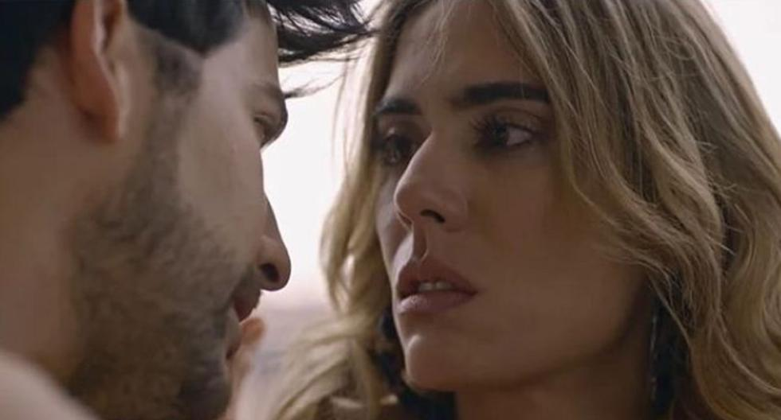
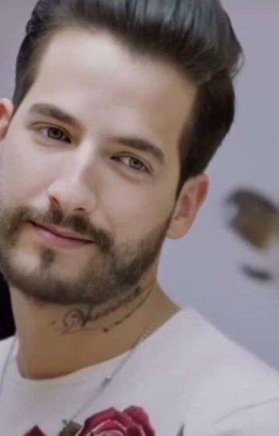
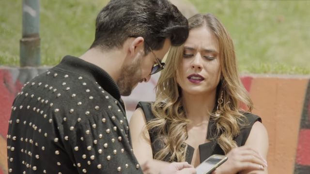
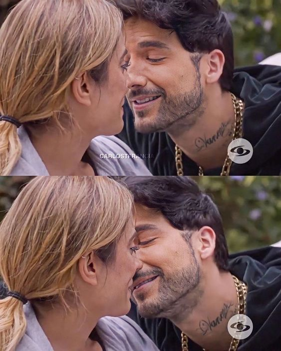

Hace dos años en la ciudad un crimen sacudió a la comunidad. Yeimy de forma involuntaria se convirtió en testigo de aquel terrible suceso. A raíz de esto, fue secuestrada y trasladada a una habitación oscura y fría. Allí el homicida, amenazándola con una pistola, la obligó a casarse con él bajo la amenaza de acabar con la vida de su hijo y su familia. Mientras la noticia se propagaba a través de los medios, Charly lleno de angustia y con una opresión en el pecho no podía comprender cómo la mujer a la que había amado y con quien había jurado pasar el resto de su vida salía de la iglesia tomada de la mano de otra persona que no era él. (en Wattpad esta dividida en 2 por el tema de las reglas de dicha plataforma de solo 200 capitulos por novela).
Después de la muerte de su madre adoptiva, un joven descubre papeles de adopción que despiertan preguntas sobre su origen. Al investigar en internet, encuentra conexiones sorprendentes con "Charly Flow", el hijo de su madre biológica. Mientras se enfrenta al abandono reciente de la que por años creyó que era su madre, la búsqueda de respuestas desencadena una serie de eventos inesperados. A medida que las piezas se unen, surge la incógnita de cómo encajarán y qué revelaciones aguardan. ¿Qué ocurrirá cuando se desvele la verdad y todo se vuelva impredecible? La revelación final dependerá del destino y de que cada personaje encuentre su lugar en este vasto mundo. Tiene por ahora 50 capitulos publicados y aún la sigo escribiendo.
En lo profundo de las encantadoras calles de Medellín, Colombia, se forja una historia llena de misterio y pasiones ocultas. Charly encontró hace algún tiempo el amor en los brazos de Carolina, una abogada decidida a defender la justicia. Ambos, se embarcan en una nueva vida, en una imponente mansión que guarda secretos que ni siquiera los muros pueden contener. Mientras tanto, Yeimy, una mujer valiente y luchadora, ha encontrado la felicidad al lado de Juancho. Juntos, se sumergen en una vida compartida con sus hijos, Emilio, Erick y Vane (estos dos últimos con Charly, aunque una no sea su hija biológica sino mas bien de corazón ). Yeimy, además, ha logrado conquistar su sueño de triunfar en el mundo de la música, brillando como una estrella en ascenso. Sin embargo, detrás de la aparente serenidad de estas vidas transformadas, se oculta un pasado que yace enterrado, listo para resurgir y sacudir los cimientos de todo lo construido. Un personaje enigmático guarda un secreto tan oscuro como inesperado, amenazando con desenterrar verdades que podrían cambiarlo todo. En esta cautivante novela, los destinos entrelazados de Charly y Yeimy se verán irremediablemente alterados por el pasado que los persigue. Enfrentados a la inminente revelación, deberán luchar contra sus propios demonios y tomar decisiones que los llevarán al límite de su cordura y lealtad. Un pasado oculto es una narrativa fascinante y adictiva que te sumergirá en un torbellino de emociones, secretos y traiciones. Con cada página, te verás atrapado en una red de suspense y romance, incapaz de soltar esta novela mundialmente aclamada que dejará a sus lectores ansiosos por descubrir la verdad.
Mientras enfrentan obstáculos aparentemente insuperables, Yeimy y Charly deben encontrar el coraje para enfrentar la verdad, confrontar su pasado y aprender a perdonarse a sí mismos y al otro. A través de momentos emotivos, de introspección y de un viaje interno hacia la sanación, la novela explora las complejidades del amor y la redención, mostrando cómo los errores del pasado pueden moldear el presente y el futuro de una relación."Un Pasado Oculto - Segunda Parte" es una historia emotiva, cargada de drama y suspenso, que invita al lector a reflexionar sobre la naturaleza del perdón, la importancia de la honestidad y la fuerza del amor en medio de la adversidad. Con personajes entrañables y una narrativa cautivadora, la novela promete una montaña rusa de emociones mientras luchan por encontrar la paz y la redención en un pasado que amenaza con destruir su presente.
©2023, Todos los derechos reservados | Fecha de publicación: 18/07/2023
Sus voces conquistaron escenarios, sus corazones se encontraron en medio del caos y su amor resistió todas las pruebas. Yeimy y Charly, dos almas destinadas a encontrarse, han superado todo para estar juntos. En la Tercera y Última Parte de 'Un Pasado Oculto', su amor será puesto a prueba como nunca antes. Aunque parecía que los secretos del pasado habían sido enterrados para siempre, el destino tiene otros planes. Oscuros enigmas emergen del pasado, amenazando con destrozar la vida que han construido. Yeimy y Charly se enfrentarán a desafíos inimaginables que pondrán en peligro su felicidad y la de sus seres queridos. Mientras la fama y el éxito musical los rodean, la sombra del pasado se cierne sobre ellos. Viejas heridas se reabren y lealtades son puestas a prueba. ¿Será suficiente su amor para mantenerlos unidos, o deberán enfrentar la posibilidad de un futuro separados? En esta apasionante conclusión, la música será su refugio y su salvación. Los lazos familiares y amistosos se fortalecerán, pero también habrá traiciones que los tomarán por sorpresa. Yeimy y Charly descubrirán que el perdón es tan crucial como la melodía más dulce, y que el poder del amor verdadero puede sanar incluso las heridas más profundas. Adéntrate en el clímax de esta apasionada historia de amor, amistad y redención. Prepárate para emociones encontradas, giros inesperados y un desenlace que te dejará sin aliento. No te pierdas la Tercera y Última Parte de 'Un Pasado Oculto' y descubre si el destino les deparará un futuro juntos o separados. ¿Estás listo para enfrentar el pasado y descubrir su desenlace?
©2023, Todos los derechos reservados | Fecha de publicación: 29/07/2023